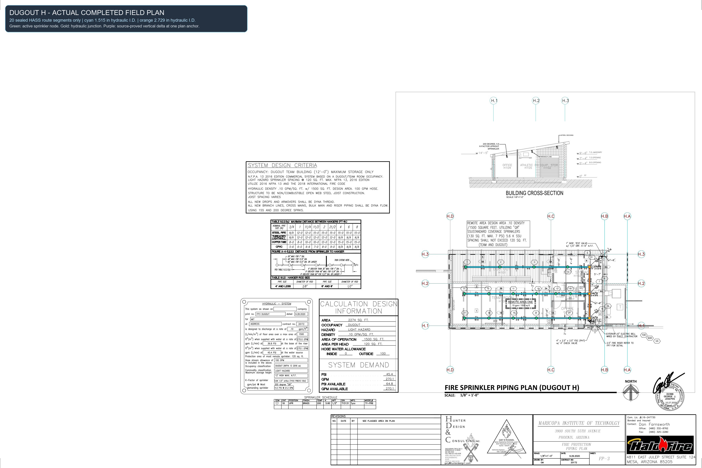
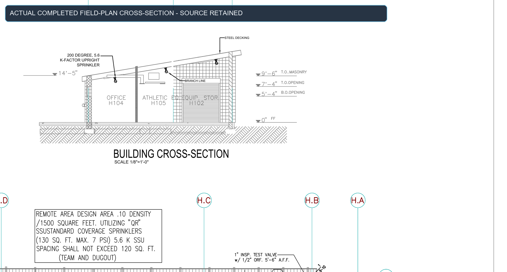
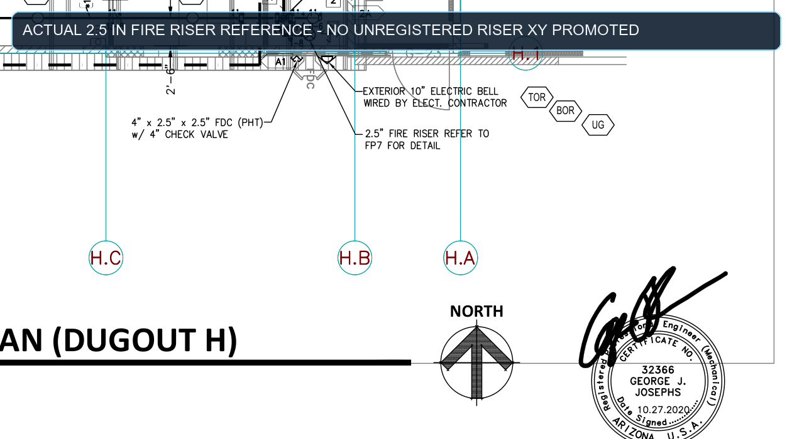
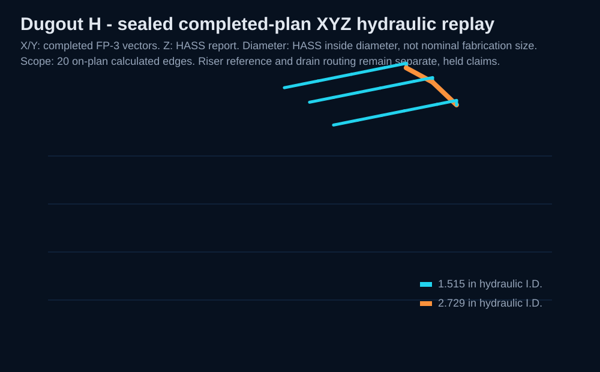

Top plan - original completed field-plan underlay + sealed hydraulic overlay

The same completed FP-3 field plan remains visible beneath the 20 sealed hydraulic route segments. The 3D replay is deliberately limited to completed-plan X/Y, exact HASS report Z, and HASS hydraulic inside diameters. It does not convert the displayed riser reference into unregistered riser geometry or invent a drain route.




Field-plan SHA-256: dbde3554b995d9ceb16d6829d683306e9a60f2dbc9b05ab87a3c60b548c0538c
Hydraulic report SHA-256: c961ffd468c0af1433e93755be4b8b388625824e259f9b52d0b61e44b6792621
Listing SHA-256: 9078f2e439aa01d8dd1c082a36939a217dea7c45ba918b7d52fefbd47cbc33b1